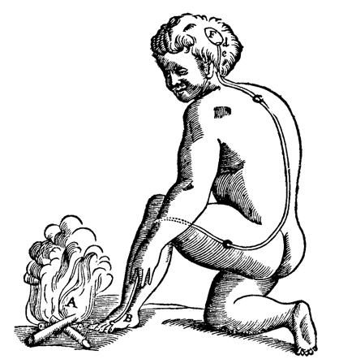

Tema 8 · Descartes
«La lectura de todos los buenos libros es como una conversación con las personas más honestas de los siglos pasados, que fueron sus autores.» — René Descartes, Discurso del método (1637)
Para entrar en Descartes
Con René Descartes (1596-1650) suele decirse que empieza la filosofía moderna. La fórmula es justa, pero conviene entender por qué. No se trata de que Descartes descubriera una verdad nueva que nadie había visto, sino de algo más radical: decidió empezar de cero. Frente a veinte siglos de saber heredado, se preguntó si había siquiera una sola cosa de la que pudiera estar absolutamente seguro, y se propuso reconstruir todo el conocimiento sobre ese único cimiento, si es que lo encontraba. Esa voluntad de refundar el saber desde sus bases, fiándose solo de la propia razón, es lo que lo convierte en el primer filósofo moderno.
Vida y circunstancia. Descartes se educó en La Flèche, uno de los mejores colegios de la Francia de su tiempo, regido por los jesuitas. Recibió allí una formación doble: la escolástica heredada de la Edad Media y, a la vez, las matemáticas más avanzadas de la época. Y salió desconcertado. Había comprobado que sobre casi cualquier cuestión filosófica hombres inteligentísimos defendían una cosa con buenos argumentos, y otros igual de doctos sostenían lo contrario con argumentos no menos sólidos. Solo en las matemáticas había encontrado certeza y acuerdo. Esa diferencia —entre una filosofía que discute sin avanzar y una matemática que demuestra y convence— será la semilla de toda su obra.
Un pensador en una época en guerra. Descartes vivió como soldado los primeros años de la guerra de los Treinta Años, el gran conflicto entre católicos y protestantes que ensangrentó Europa tras la Reforma (§32). Cuando dejó la vida militar, se instaló en los Países Bajos, que en aquel siglo eran un refugio para quien quería pensar con libertad. Allí escribió casi toda su obra. Era un católico ferviente y, prudente tras la reciente condena de Galileo (1564-1642) por defender el heliocentrismo (§33), cuidó siempre de no chocar de frente con la Iglesia. Su gran libro, el Discurso del método, apareció en 1637, en plena revolución científica: Descartes busca para el pensamiento un método tan seguro como el que la nueva ciencia estaba dando al estudio de la naturaleza.
El mapa del tema. Vamos a recorrer su filosofía en el orden en que él mismo la construye. Primero, el programa común a todo el racionalismo, la corriente que Descartes inaugura (§34). Después, el método con que se propone alcanzar la certeza (§35). Luego, la puesta en marcha de ese método: la duda que lo destruye todo y la primera verdad que resiste, el cogito (§36). Y, por último, lo que sobre esa primera verdad logra reconstruir: la existencia de Dios, del mundo y la división de la realidad en sustancias, con el célebre dualismo de alma y cuerpo (§37). Empecemos por situar a Descartes en su corriente.

§34 · Características generales del racionalismo
Toda la sección anterior desembocaba en una pregunta: si el criterio de la verdad ya no es la autoridad heredada, sino el propio sujeto, entonces «¿cómo conocemos?» (§30, §33). La filosofía moderna se parte en dos al responderla. Una corriente sostiene que la fuente y la garantía del conocimiento verdadero está en la razón; la otra, que está en la experiencia. A la primera la llamamos racionalismo; a la segunda, empirismo. Esta sección expone el programa racionalista, del que Descartes es el fundador; el empirismo lo veremos en §38, redactado de forma comparable para que puedas confrontarlos.
La razón como fuente del conocimiento. El racionalismo parte de una desconfianza: los sentidos engañan y nos dan, a lo sumo, lo particular y cambiante. El conocimiento verdadero —universal, necesario, seguro— no puede apoyarse en ellos, sino en la razón. Donde un teorema matemático vale siempre y en todas partes, lo que me muestran los sentidos vale aquí, ahora y quizá solo en apariencia. Por eso el racionalista busca en la razón, y no en la experiencia, el origen del saber.
Las ideas innatas. Si el conocimiento no viene de los sentidos, ¿de dónde saca la razón sus contenidos? De sí misma. Los racionalistas sostienen que la mente posee ideas innatas: ideas que no hemos recibido por los sentidos ni fabricado con la imaginación, sino con las que la razón cuenta por su propia naturaleza. La idea de infinito es el ejemplo típico: nadie ha visto nunca el infinito, de modo que esa idea no puede proceder de la vista ni del tacto. También lo son los axiomas de la geometría o el principio de que toda causa produce un efecto. La tesis de las ideas innatas será, precisamente, el primer blanco del empirismo (§38), que la niega de raíz.
El modelo matemático. El racionalista no solo confía en la razón: confía en un modo concreto de usarla, el de las matemáticas. La geometría parte de unos pocos principios evidentes —los axiomas— y, por pura deducción, va extrayendo de ellos verdades cada vez más complejas, todas tan seguras como el punto de partida. Ese es el ideal del conocimiento racionalista: partir de principios evidentes y avanzar por deducción, encadenando certezas. De ahí que el racionalismo aspire a un saber de tipo demostrativo, no a la mera acumulación de observaciones.
La autonomía de la razón. Hay en todo esto un gesto típicamente moderno, el que vimos como hilo común de la época (§30): la razón se declara autónoma. Ya no trabaja al servicio de la fe ni necesita el aval de una autoridad externa para validar sus conclusiones. Conviene no malentenderlo: los grandes racionalistas fueron creyentes —Descartes, sin ir más lejos—, pero su Dios y su modo de razonar sobre él son ya los de un pensador que se fía primero de su propia razón. La razón se basta a sí misma para conocer.
El alcance: un mundo inteligible. ¿Hasta dónde llega este conocimiento? Muy lejos, porque el racionalista da por supuesto que la realidad misma está ordenada racionalmente. Si el mundo obedece a un orden que la razón puede reconstruir, entonces el conocimiento verdadero es objetivo: no depende de mi cultura, mi biografía ni mi estado de ánimo, sino que capta cómo son las cosas. Esta confianza —la razón humana puede, por sí sola, conocer la estructura de lo real— es lo que un siglo después el empirismo de Hume (§39) y, sobre todo, la filosofía crítica de Kant (§50) pondrán seriamente en duda.
Los nombres. En la corriente racionalista, además de Descartes —el primero en sentido estricto—, se cuentan Baruch Spinoza (1632-1677) y Gottfried Leibniz (1646-1716), todos ellos pensadores de la Europa continental. Frente a ellos, en las islas británicas, se alza la corriente empirista, que culmina en David Hume y a la que dedicaremos el tema siguiente. Descartes es el mejor ejemplo del programa que acabamos de describir; veámoslo en acción, empezando por su método.
§35 · Descartes: el método
Recordemos el desconcierto del joven Descartes: la filosofía discute sin avanzar, mientras las matemáticas demuestran y convencen. De ese contraste extrae su diagnóstico: lo que a la filosofía le falta no son ideas, sino método. Sin un camino seguro, la razón se pierde por más dotada que esté, igual que un buen caminante sin rumbo. Y, si hay una disciplina que sí posee ese camino, será la que haya que imitar.
Las matemáticas como modelo. ¿Por qué las matemáticas y no otra ciencia? Porque en ellas Descartes encuentra lo que en ninguna otra parte había hallado: unos principios que todos aceptan —los axiomas— y un criterio claro para admitir o rechazar cualquier afirmación. En matemáticas no caben las opiniones encontradas que tanto le habían frustrado en filosofía. Así que Descartes se propone trasladar a todo el conocimiento el modo de proceder de las matemáticas: partir de lo evidente y avanzar paso a paso, sin admitir nada dudoso. El método que va a formular no es sino la generalización de ese ideal.
Las cuatro reglas. Descartes dejó constancia de su método en el texto que conviene leer, el Discurso del método (1637), donde lo reduce a cuatro reglas. La primera, y la más importante, es la regla de la evidencia: «no admitir como verdadera cosa alguna, como no supiese con evidencia que lo es», es decir, no aceptar sino lo que se presente a la mente «tan clara y distintamente» que no haya ocasión de ponerlo en duda. Las otras tres ordenan el trabajo: el análisis, «dividir cada una de las dificultades en cuantas partes fuere posible», descomponiendo lo complejo en sus elementos simples; la síntesis, «conducir ordenadamente los pensamientos, empezando por los objetos más simples» para ir reconstruyendo, peldaño a peldaño, lo complejo; y la enumeración, «hacer recuentos tan integrales y revisiones tan generales» que uno quede seguro de no haber omitido nada.
Claro y distinto. El centro de todo es la primera regla, porque en ella va el criterio de verdad del racionalismo: es verdadero lo que la mente concibe de forma evidente, esto es, clara y distinta. Y conviene precisar esos dos términos, porque Descartes los usa con rigor. Una idea es clara cuando está presente y patente a la mente que atiende, hasta poder definirla y comprenderla del todo. Y es distinta cuando está tan separada de las demás que no incluye nada que no sea ella misma, de modo que no la confundimos con ninguna otra. La idea matemática de triángulo es clara y distinta; la idea vaga de «lo que está bien» no lo es. Solo lo claro y distinto pasa el filtro.
Un método para pensar, no para experimentar. Fíjate en una diferencia decisiva respecto del método de la nueva ciencia que vimos en §33. El método experimental de Bacon parte de la observación de la naturaleza; el de Descartes, en cambio, es un camino de la razón que opera sobre sus propias ideas: analiza, ordena y deduce, como en una demostración matemática. Es el método de un racionalista. Pero un método, por bueno que sea, necesita un punto de partida: un primer principio absolutamente cierto desde el cual deducir lo demás, como los axiomas en geometría. ¿Existe una verdad así, una que resista cualquier duda? Para averiguarlo, Descartes va a convertir su primera regla en un arma demoledora. De ello trata la sección siguiente.
§36 · Descartes: la duda metódica, el cogito y las clases de ideas
La primera regla del método ordenaba no admitir nada que no fuera evidente. Descartes la toma al pie de la letra y la lleva hasta el extremo: en vez de esperar a tropezar con lo dudoso, decide dudar de todo por sistema, a ver si algo sobrevive. Es la duda metódica. Importa entender bien su sentido, porque se parece al escepticismo sin serlo. El escéptico duda para quedarse en la duda, porque cree que no hay verdad posible (§05, §23). Descartes duda exactamente por lo contrario: duda para encontrar una certeza, y la duda es solo su instrumento, no su meta. Es una duda provisional, voluntaria y dirigida.
Primer motivo: los sentidos engañan. ¿De qué podemos dudar? En primer lugar, de todo lo que nos llega por los sentidos. Sabemos que alguna vez nos han engañado —un remo recto parece quebrado dentro del agua, una torre cuadrada se ve redonda a lo lejos—, y, lo decisivo, no tenemos un criterio seguro para saber cuándo nos engañan y cuándo no. Y si una fuente de conocimiento me ha mentido aunque sea una vez sin que yo pudiera advertirlo, la prudencia obliga a desconfiar de ella por entero.
Segundo motivo: el sueño. Podría objetarse que hay cosas que no engañan: que estoy aquí sentado, leyendo, con un cuerpo. Pero Descartes da un paso más con el argumento del sueño: muchas veces, dormido, he creído con total convicción estar viviendo cosas que no eran reales, y al despertar no había modo de haberlo sabido desde dentro del sueño. ¿Cómo estar seguro, entonces, de que no estoy soñando ahora mismo? Si no puedo descartarlo, también la existencia del mundo exterior y de mi propio cuerpo cae bajo la duda.
Tercer motivo: el genio maligno. Quedan, al menos, las verdades de la razón: dos y tres son cinco, sueñe yo o esté despierto. Aquí Descartes lleva la duda a su grado máximo, la hace hiperbólica —exagerada a propósito—, con una hipótesis extrema: imaginemos que existe un genio maligno, un ser todopoderoso empeñado en engañarme, capaz de hacer que me equivoque incluso al sumar o al contar los lados de un cuadrado. Mientras no pueda excluir esa hipótesis, ni siquiera las matemáticas se salvan. Tras este tercer golpe ya no queda nada en pie: la duda lo ha arrasado todo.
La primera certeza: el cogito. Y, sin embargo, justo en el fondo de esa nada Descartes encuentra una roca. Por mucho que el genio maligno me engañe, hay algo que no puede ser falso: que yo, mientras dudo, estoy pensando; y, si pienso, tengo que existir, aunque solo sea para ser engañado. Esta es la primera verdad, la que resiste toda duda: «pienso, luego soy» —en latín, cogito, ergo sum—. No es una deducción, sino una intuición inmediata: en el mismo acto de pensar, capto sin posible error que existo. Y como es la primera cosa que se me impone con plena claridad y distinción, sirve además para confirmar el criterio de la primera regla: como dice Descartes, «las cosas que concebimos muy clara y distintamente son todas verdaderas».
Qué soy: una cosa que piensa. ¿Y qué es ese «yo» cuya existencia es indudable? No mi cuerpo —de él aún dudo, porque podría estar soñándolo—, sino únicamente aquello que no puedo negar sin contradecirme: que soy algo que piensa. Descartes lo llama, en latín, res cogitans, «cosa pensante». De momento no puede afirmar nada más: ni que tenga cuerpo, ni que exista un mundo. Está encerrado en sí mismo, en su sola existencia como sujeto pensante —es lo que se llama solipsismo—. Ha ganado una certeza absoluta, pero una sola, y mínima.
Las clases de ideas. Si lo único seguro es que soy una cosa que piensa, la pregunta siguiente es: ¿y en qué piensa esa cosa? En ideas, que Descartes clasifica en tres tipos según su origen. Las adventicias parecen venirnos de fuera, de la experiencia: la idea de «caballo» o de «árbol». Las facticias las fabrica uno mismo combinando otras: la idea de «unicornio», hecha juntando «caballo» y «cuerno». Y las innatas no proceden de los sentidos ni de la imaginación, sino que la razón las tiene por sí misma: las ideas de «infinito» o de «perfección», que ningún sentido ha podido proporcionarnos.
El puente hacia la salida. Esta clasificación no es un inventario ocioso: es el camino para salir del solipsismo. De las ideas adventicias no puede Descartes fiarse todavía, porque aún duda del mundo exterior; menos aún de las facticias, que dependen de aquellas. Solo le quedan las innatas. Y entre ellas hay una decisiva —la idea de infinito, que es tanto como decir la idea de Dios— que será la llave para escapar del encierro y recuperar, una a una, las certezas perdidas. Cómo esa idea innata permite demostrar la existencia de Dios y, con ella, devolver la confianza en la razón y en el mundo, es lo que veremos en la sección siguiente.
§37 · Descartes: las sustancias y el dualismo
Habíamos dejado a Descartes encerrado en su «yo» pensante, con una sola certeza y una llave en la mano: la idea innata de infinito, o de Dios. La parte constructiva de su filosofía consiste en usar esa llave. El orden es estricto, como en una demostración: primero hay que probar que Dios existe; solo después podrá recuperarse todo lo demás.
Las pruebas de la existencia de Dios. Descartes razona a partir de la idea de Dios que encuentra en sí mismo. Su argumento principal es el de la infinitud: yo tengo la idea de un ser infinito y perfecto, pero yo soy finito e imperfecto —prueba de ello es que dudo, y dudar es señal de imperfección—; ahora bien, lo más no puede salir de lo menos, de modo que esa idea de infinito no he podido producirla yo, ni recibirla del mundo finito que me rodea: solo un ser realmente infinito, Dios, ha podido ponerla en mí1. La idea de lo infinito, impresa en una mente finita, es como la firma del artífice en su obra.
Dios veraz: la garantía que levanta la duda. Aquí está el giro decisivo de toda la obra. Si Dios existe y es perfecto, entonces no puede ser un engañador, porque engañar es una imperfección. Y un Dios que no engaña no habría puesto en mí una razón radicalmente falsaria: luego puedo fiarme de ella, y lo que percibo con claridad y distinción es verdadero. Con esto se desvanece la hipótesis del genio maligno —Dios, veraz, ocupa el lugar que aquel amenazaba— y la duda deja de ser hiperbólica. La garantía del conocimiento, que el cogito aseguraba solo para sí mismo, queda ahora extendida a todo lo que la razón conciba con evidencia. Repara en lo que esto significa: en el sistema cartesiano, es Dios quien en última instancia garantiza la verdad de la razón humana.
¿De dónde viene entonces el error? Si Dios garantiza la razón, surge un problema: ¿cómo es que nos equivocamos? La respuesta de Descartes es elegante. El entendimiento, que concibe las ideas, es limitado, pero no nos engaña; el error nace de la voluntad, que es libre e ilimitada y se precipita a afirmar o negar más allá de lo que el entendimiento concibe con claridad. Erramos, pues, cuando juzgamos sobre lo que no comprendemos del todo. He aquí el límite del conocimiento racionalista: la verdad está asegurada si nos atenemos a lo claro y distinto y refrenamos el juicio en lo demás.
Las tres sustancias. Recuperada la confianza en la razón, Descartes puede ya ordenar la realidad. Lo hace con la noción de sustancia: aquello que existe por sí mismo, sin necesitar de otra cosa para ser. Distingue tres. La res cogitans, la cosa pensante —el yo, el alma—, cuya esencia es pensar. La res infinita —Dios—, infinita y perfecta. Y la res extensa —el mundo material—, cuya esencia es la extensión, ocupar espacio. Descartes las ha descubierto en este orden —yo, Dios, mundo—, pero el orden del ser es el inverso: primero Dios, que crea las otras dos. En rigor, solo Dios es sustancia en sentido pleno, porque solo él no depende de nada; pero Descartes sigue llamando sustancias al alma y al mundo porque son independientes entre sí: el yo puede existir sin el mundo, y el mundo sin el yo.
El mundo como un mecanismo. Si lo propio del mundo material es la pura extensión, entonces todo en él se reduce a piezas extensas en movimiento. De ahí la imagen mecanicista de Descartes: el universo es como un inmenso reloj, un juego de engranajes que se empujan unos a otros según leyes fijas, sin almas ni fines ocultos. Esta visión encaja a la perfección con la física de la revolución científica (§33) y será enormemente fecunda para la ciencia; pero, llevada hasta el final, plantea un problema cuando llegamos al ser humano.
El dualismo y la glándula pineal. Porque el ser humano es, a la vez, las dos sustancias creadas: res cogitans y res extensa, alma que piensa y cuerpo que ocupa espacio. Es el dualismo antropológico cartesiano. Y encierra una dificultad que el propio Descartes vio y no logró resolver: si alma y cuerpo son sustancias de naturaleza opuesta —una inmaterial, la otra extensa—, ¿cómo es que interactúan?, ¿cómo mueve mi voluntad un brazo, o cómo un dolor del cuerpo alcanza al alma? Descartes propuso que el punto de contacto era un pequeño órgano del cerebro, la glándula pineal. La solución no convenció casi a nadie, y el problema de la relación entre lo mental y lo físico quedó como una de las herencias más espinosas —y más vivas— de su filosofía.

Hacia el empirismo y Kant. Con Descartes, el racionalismo ha levantado un edificio entero —razón, método, yo, Dios, mundo— sobre el cimiento del cogito. Pero ese edificio descansa en dos piezas que pronto serán atacadas: las ideas innatas y la noción de sustancia. El empirismo (§38) negará que tengamos ideas innatas y, con Hume (§39), que podamos siquiera conocer las sustancias; y Kant (§50) intentará superar el pulso entre razón y experiencia. Por eso el texto cartesiano sobre el origen del conocimiento es el primero de una serie que conviene leer en paralelo —Descartes, Hume, Kant—, tres respuestas rivales a una misma pregunta: ¿hasta dónde puede la razón conocer?
Descartes añade una segunda vía, una versión del argumento ontológico que san Anselmo de Canterbury había formulado en el siglo XI: en la idea de un ser absolutamente perfecto está contenida ya la existencia, pues un ser que no existiera sería menos perfecto que uno que sí existe; luego Dios, por definición, existe. Es un argumento muy discutido —ya en su tiempo—, y conviene tomarlo como complemento del argumento de la infinitud, que es el que sostiene de verdad el edificio.↩︎